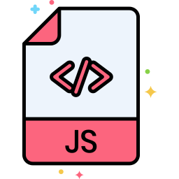

HTML

CSS

JavaScript

wordpress
figma

photoshop
Одинаковое отображение элементов в разных браузерах
CSS Flexbox модуль макета гибкого контейнера. Flex позволяет контролировать размеры, порядок и выравнивание элементов по разным осям
Адаптация под разные разрешение экрана, так как принимаются медиа-запросы, которые и определяют стили для конкретных разрешение